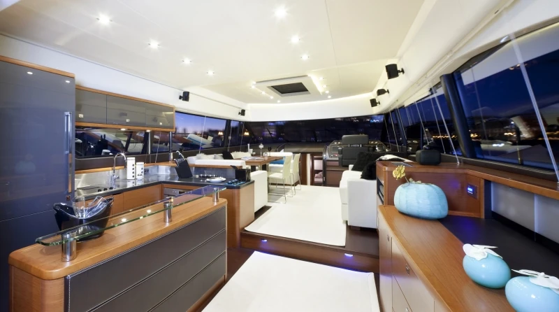
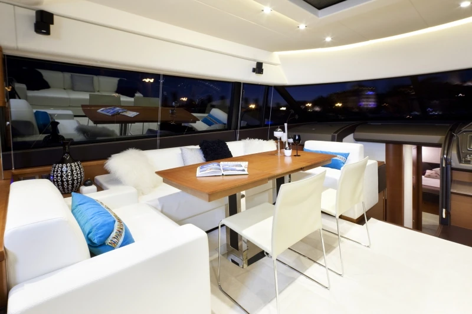
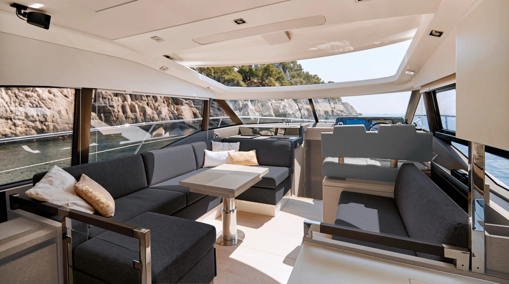
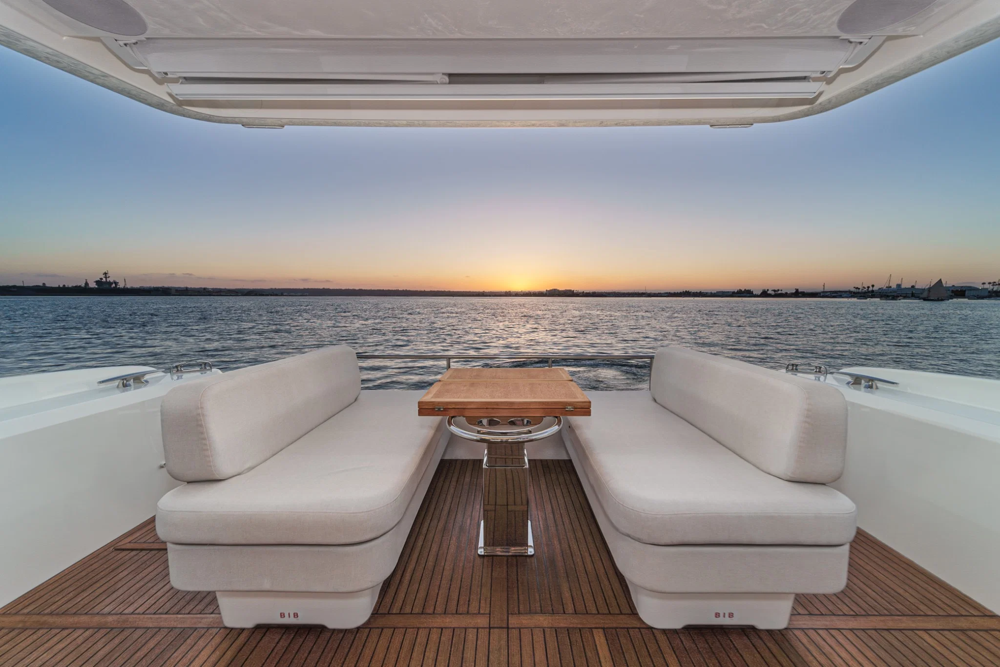
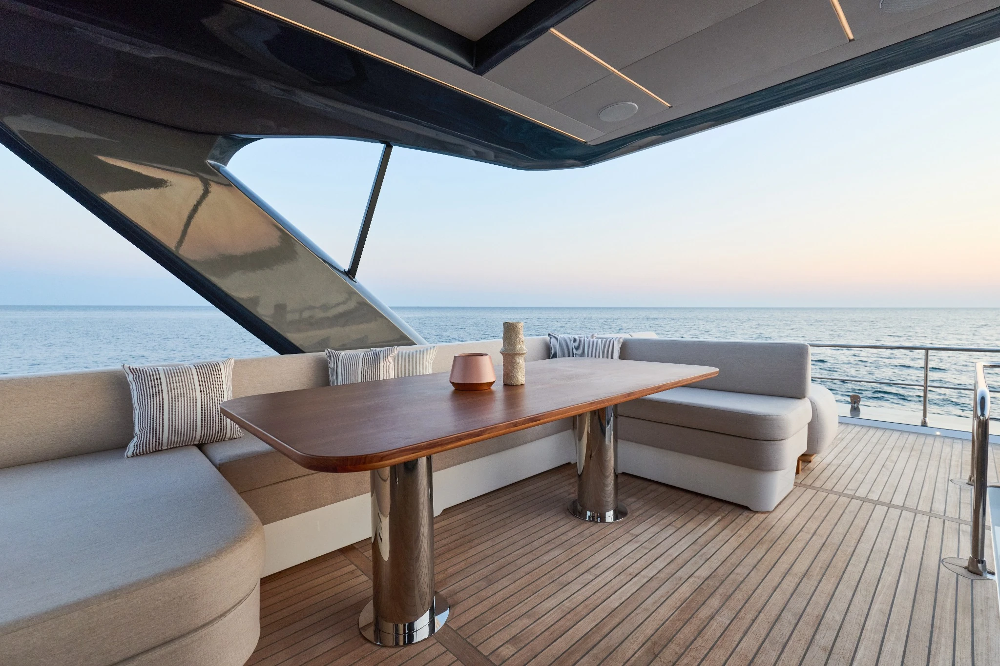
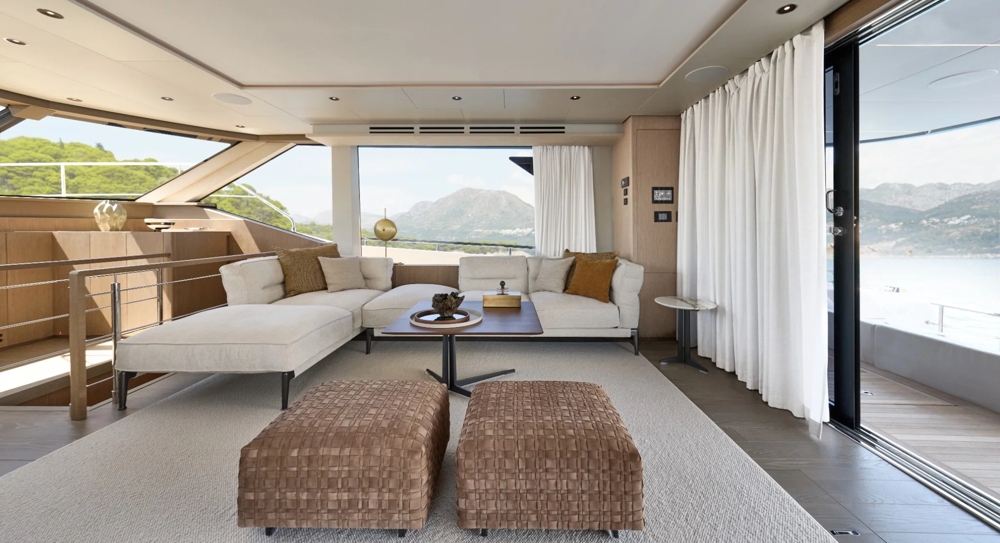
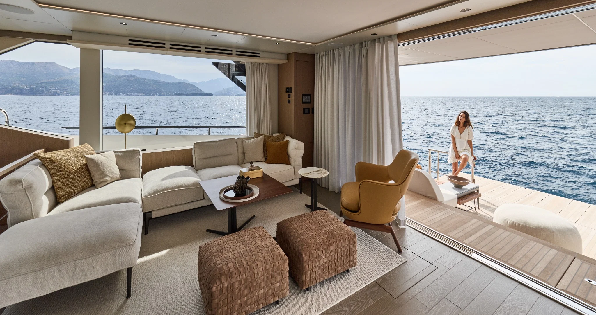
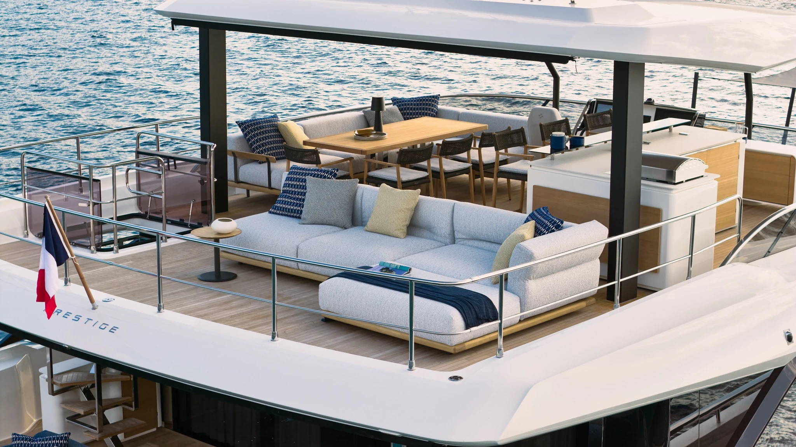
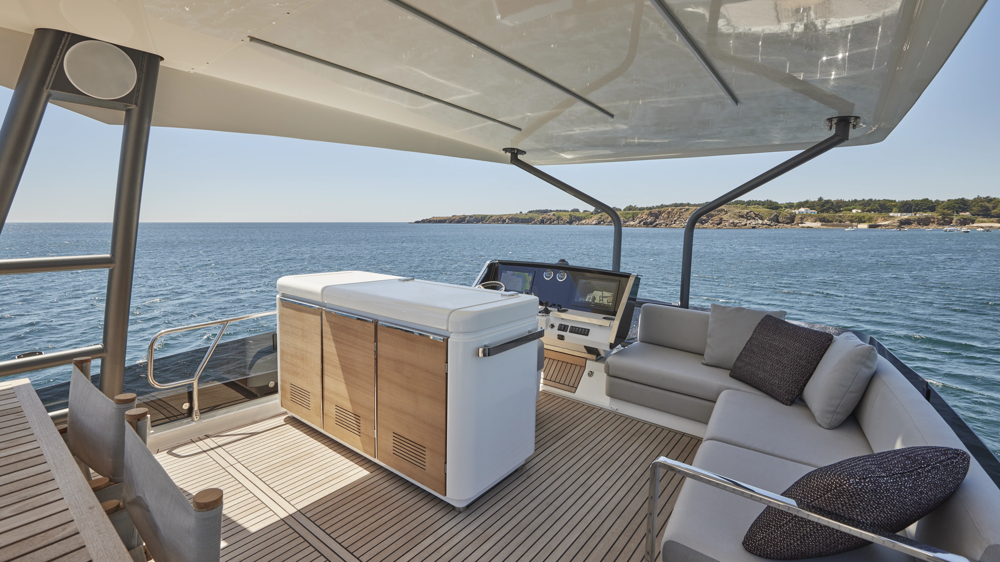

Prestige 620 interior

Interior refit, bespoke furniture, materials and complete project coordination — designed around the way you want to live on board.
Original Prestige photography selected to show premium interiors, upholstery, joinery and refit detail.
Visual reference photography — not completed PAPOA projects.




.webp)

.webp)

.webp)




.webp)
.webp)

.webp)
.webp)


.webp)


A visual refit study showing how material, furniture and atmosphere can completely change the feeling on board.
BeforeAfterWe combine concept design, 3D visualisation, technical development and trusted specialist partners to transform existing yachts without losing what already works.
Discuss your yacht →Complete or partial transformations of saloons, cabins and social areas.
→Custom joinery, storage and furniture designed for marine use.
→Leather, fabrics, foam and finishes selected for comfort and durability.
→Ambient and functional lighting integrated into the interior concept.
→Accurate visualisation and development before production begins.
→Coordination of suppliers, production, installation and final detailing.
→
A warmer, quieter and more contemporary interior direction for a proven yacht platform.
Talk to us →A good refit does not need to erase the boat's identity. We focus on the interventions that create the biggest improvement in comfort, atmosphere and perceived quality.